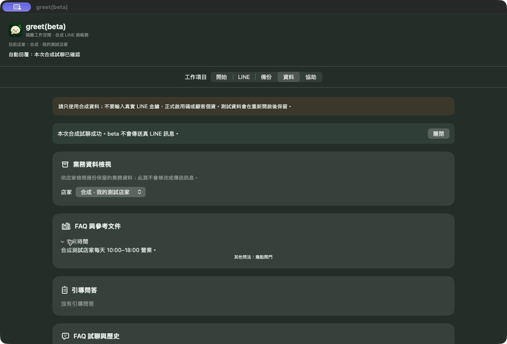
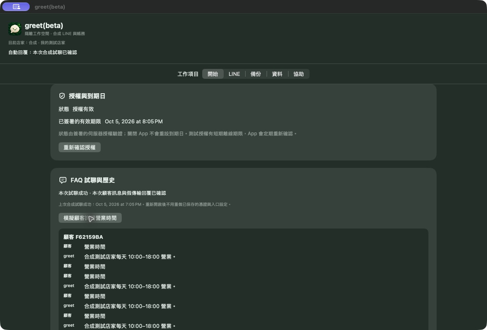

那莫好聽｜形象網站範本
以音樂品牌為範本，整理品牌故事、課程內容與常見問題。

作品展示
形象網站與 AI 客服，看看實際畫面。
以音樂品牌為範本，整理品牌故事、課程內容與常見問題。
greet｜AI 客服
這裡展示 greet(beta) 0.3.0 的本機合成流程：查看營業時間 FAQ、模擬顧客提問，並檢視測試回覆。畫面中的店家與訊息都是合成資料，沒有傳送真 LINE 訊息。


正式接線、使用環境與日常接待方式，依實際需求評估；本頁的測試版畫面不代表真 LINE 或付費服務已啟用。